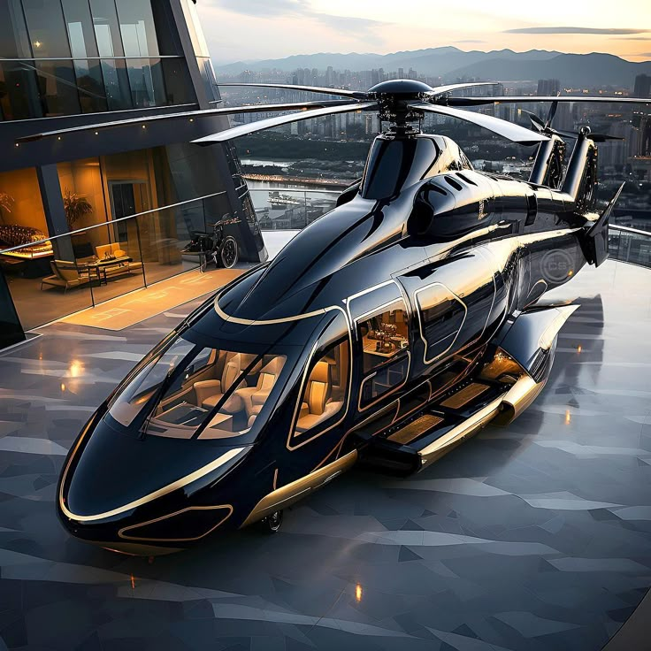

Helicópteros de Luxo
Bem-vindo à Helicópteros de Luxo, sua loja de carros e acessórios. Confira nossas promoções. Receba informações sobre nossos lançamentos por email.
Como chegar
Você nos encontrará bem no centro da Cidade Aeroviária, na Rua Sem Número. Se precisar de ajuda para nos localizar, verifique nossas instruções detalhadas. Venha nos visitar !!!
Ver mapa ampliado